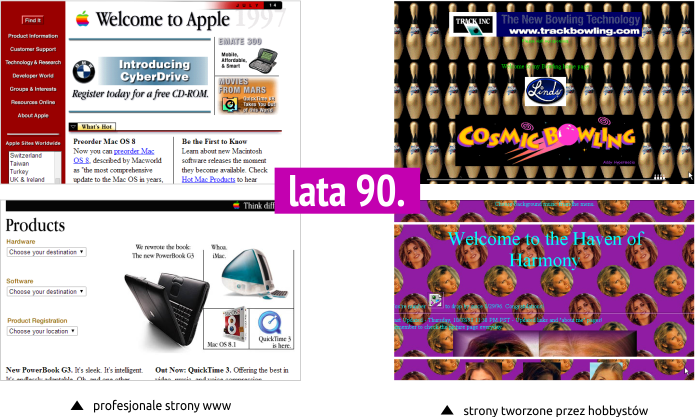
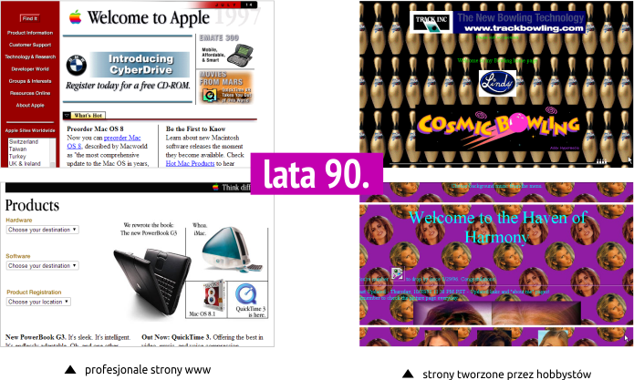
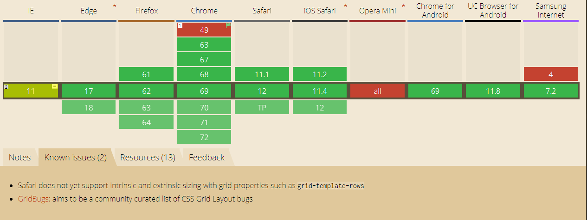

CSS GRID
Anna Lasocka
INLINE (80's), TABLE (90's), FLASH (90's), FLOAT (00's), FLEX
 

GRID
IMPLEMENTACJA
```css
display: grid;
```
```css
grid-template: grid-templates-rows / grid-templates-columns;
```
```css
grid-gap: grid-row-gap grid-column-gap;
```
nowa jednostka długości
fr unit
KOLUMNY I RZEDY
grid-rows, grid-cols
OBSZARY
grid-templates-areas
grid-area
ustawienia
podobnie do flex
```css
justify-items: start
align-items: start
place-items: align-items / justify-items;
```
start | end | center | stretch;
```css
justify-content: start;
align-content: start;
place-content: align-content / justify-content
```
start | end | center | stretch | space-around | space-between | space-evenly
Koniec
pytania, podziękowania, brawa